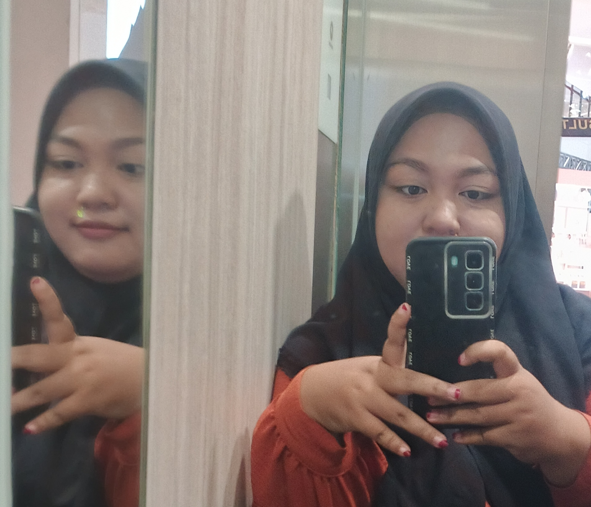

Profil Akademik
Bagian ini memuat identitas utama sebagai mahasiswa dan menjadi dasar entitas Person pada struktur data Schema.org.

Andi Nanis Sacharina
Mahasiswa Program Studi Ilmu Komputer Universitas Halu Oleo yang memiliki minat pada pengembangan web, Web Semantik, Cloud Computing, Machine Learning, dan Software Engineering.
Pendidikan Aktif
Informasi pendidikan digunakan untuk menunjukkan hubungan antara profil mahasiswa dan institusi pendidikan.
Universitas Halu Oleo
Program Studi Ilmu Komputer
Pendidikan aktif ini direpresentasikan sebagai relasi antara entitas Person dan CollegeOrUniversity pada data terstruktur Schema.org.
Bidang Kemampuan
Keahlian dikelompokkan berdasarkan bidang project akademik yang pernah dikerjakan.
Front End Development
HTML, CSS, JavaScript, Bootstrap, desain antarmuka web
Back End Development
PHP, MySQL, Flask, pengelolaan data aplikasi
Semantic Web
RDF, OWL, SPARQL, JSON-LD, Schema.org, Linked Data
Cloud Computing
AWS EC2, GitHub Pages, deployment, API integration
Machine Learning
Python, NLP, text classification, Streamlit
Software Engineering
UML, analisis sistem, dokumentasi project, desain perangkat lunak
Keterlibatan Akademik dan Organisasi
Bagian ini memuat keterlibatan organisasi dan aktivitas akademik yang mendukung profil mahasiswa.
Himpunan Mahasiswa Program Studi Ilmu Komputer
Keterlibatan dalam himpunan mahasiswa menunjukkan partisipasi dalam lingkungan akademik program studi. Selain itu, project akademik yang ditampilkan menunjukkan pengalaman dalam pengembangan aplikasi pada beberapa mata kuliah dan kegiatan magang.
Project Akademik
Project berikut menunjukkan pengalaman pengembangan aplikasi dari beberapa mata kuliah dan kegiatan magang.
CineMatch Semantic
Aplikasi Web Semantik untuk data film menggunakan RDF, OWL, SPARQL, PHP, dan Linked Data.
Smart Campus Complaint
Aplikasi Machine Learning berbasis NLP untuk klasifikasi keluhan mahasiswa.
MovieMate
Aplikasi movie untuk tugas Cloud Computing dengan integrasi API dan deployment online.
SIPADU
Sistem informasi magang untuk perhitungan KGB, KP4, dan data kepegawaian.
CarbonCount
Project analisis desain perangkat lunak untuk menghitung dan mengurangi penggunaan karbon.
Beauty
Project web pertama pada mata kuliah Rekayasa Perangkat Lunak.
Subject, Predicate, Object
Relasi semantik digunakan untuk menjelaskan hubungan antara profil, universitas, organisasi, keahlian, dan project.
Relasi Utama
Relasi ini menunjukkan bahwa data pada website tidak berdiri sendiri, tetapi memiliki hubungan yang dapat dijelaskan dalam bentuk Subject, Predicate, dan Object.
| Subject | Predicate | Object |
|---|---|---|
| Andi Nanis Sacharina | affiliation | Universitas Halu Oleo |
| Andi Nanis Sacharina | memberOf | Himpunan Mahasiswa Program Studi Ilmu Komputer |
| Andi Nanis Sacharina | knowsAbout | Web Development |
| Andi Nanis Sacharina | knowsAbout | Semantic Web |
| Andi Nanis Sacharina | subjectOf | CineMatch Semantic |
| Andi Nanis Sacharina | subjectOf | Smart Campus Complaint |
| Andi Nanis Sacharina | subjectOf | MovieMate |
| Andi Nanis Sacharina | subjectOf | SIPADU |
| Andi Nanis Sacharina | subjectOf | CarbonCount |
| Andi Nanis Sacharina | subjectOf | Beauty |
Data Terstruktur JSON-LD
Website ini menggunakan Schema.org dalam format JSON-LD untuk mendeskripsikan profil dan project secara terstruktur.
Skema yang Digunakan
Skema utama yang digunakan adalah Person dan CollegeOrUniversity. Skema tambahan yang digunakan adalah Organization, Project, dan DefinedTerm.
Person
Profil mahasiswa.
CollegeOrUniversity
Universitas Halu Oleo.
Organization
Himpunan mahasiswa.
Project
Project akademik.
DefinedTerm
Konsep dan bidang keahlian.